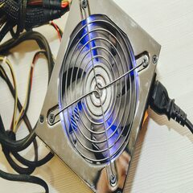
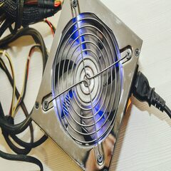

Ventiladores
Cómo de importantes son los ventiladores en un PC pues de ellos va a depender en parte la buena refrigeración de los componentes. Sobra decir que los componentes electrónicos trabajan a altas frecuencias y con fuertes intensidades de corriente. Esto junto a una superficie mínima provoca que las temperaturas en ellos se disparen necesitando así disipadores. A su vez, estos disipadores son capaces de coger todo el calor que genera el chip y repartirlo en una innumerable cantidad de aletas de cobre o aluminio en ellos. ¿Para qué sirven tantas aletas? Pues para que un flujo de aire forzado entre en ellas y se lleve todo el calor posible hacia el ambiente.
Caracteristicas
Se puede poner en 5 diferentes posiciones para tener en un buen lugar la laptop, contiene doble ventilador con iluminacion, se conecta mediante USB y cuando esta encendida no hace demasiado ruido los ventiladores.
 
